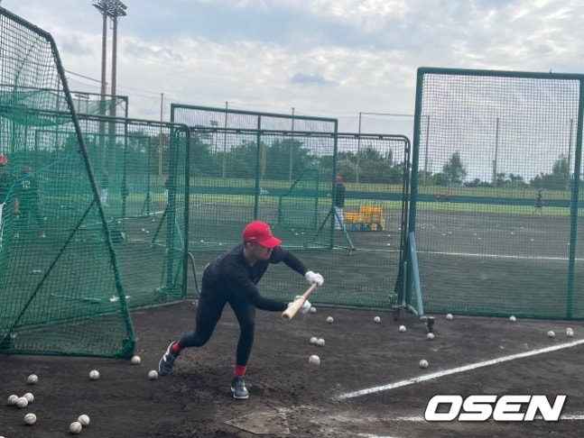
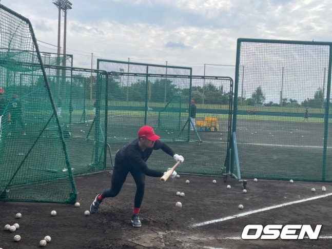

타이거즈가 오키나와 마무리캠프에서 호주 대표 주전 유격수 재러드
데일(Jaryyd Dale. 26)을 상대로 입단테스트를 진행했
다. 4년 80억 원을 받고 두산으로 이적한 FA 박찬호의 빈자리를 메우기
위해서다. 계약한다면 주전 유격수 부재 대안을 아시아쿼터에
서 찾은 셈이다.
KIA는 내년부터 도입되는 아시아쿼터제 외인 후보로 투수를 물색해왔다. 다른
구단들도 주로 투수들이 대상자였다. 그러나 박찬호의 두
산 이적으로 방침을 바꾸었다. 수바에서 가장 중요한 유격수 공백을 메워야
했다. 심재학 단장이 박찬호 이적에 대비해 리스트업을 해놓
은 데일의 대리인에게 전화를 걸었다.
데일은 지난 19일부터 오키나와 킨구장에서 펼쳐진 마무리캠프에 합류해
5일동안 훈련했다. 일종의 테스트였다. 첫 날 훈련부터 매끄러
운 수비력과 정교한 타격을 과시해 합격점을 받았다. 번트 능력까지 준수했다.
지켜본 이범호 감독을 비롯해 코치진은 만족스러운 평가
를 내렸다. 심재학 단장도 한국에서 날아와 지켜봤다.

데일은 188cm 90kg의 체격조건을 갖추었다. 샌디에이고 산하 마이너리그 더블A
팀에서 프로 커리어를 시작했다. 2023 WBC대회 호
주대표로 출전했다. 올해는 일본프로야구 오릭스 버팔로스에 입단했다. 2군
웨스턴리그 41경기 타율 2할9푼1리 2홈런 16타점을 올렸
다. 최근 울산에서 열린 KBO 폴리그에도 멜버른 에이시스 소속 선수로
참가했다.
이범호 감독은 “큰 키에 비해 몸도 유연하고 어깨도 강하다. 푸드워크도 좋고
송구도 깔끔하다. 이 정도면 KBO리그에서도 최상급 수비
이다. 오지환과 박찬호 바로 아래 클래스 정도는 될 것이다. 타격도 쓸만하고
아시아 야구도 잘 알고 있다”고 높은 평점을 매겼다.
이어 "플레이 영상을 찾아보니 정말 열심히 하는 선수였다. 여기에서도
똑같았다. 일본 2군에서 2할9푼대를 쳤다면 우리 리그에서 2할7
푼 정도는 칠 수 있을 것이다. 이 정도만 해도 좋다. 일본 경험이 있어 작전이
많은 한국야구에 익숙하다. 50% 번트수비, 100% 번트수
비도 숙지하고 있다”고 설명했다.
 

데일은 입단하면 주전 유격수로 나선다. 내야 전천후 수비능력을 갖춰 경기
상황에 따라 2루수나 3루수 기용도 가능하다. 물론 아직은
입단이 확정된 것은 아니다. 조만간 최종 결정을 내린다. 공수에 걸쳐 박찬호의
공백을 메워준다면 KIA에게는 최상의 시나리오이다. 3루
수 김도영의 유격수 기용 플랜도 없던 일이 된다.
/sunny@osen.co.kr